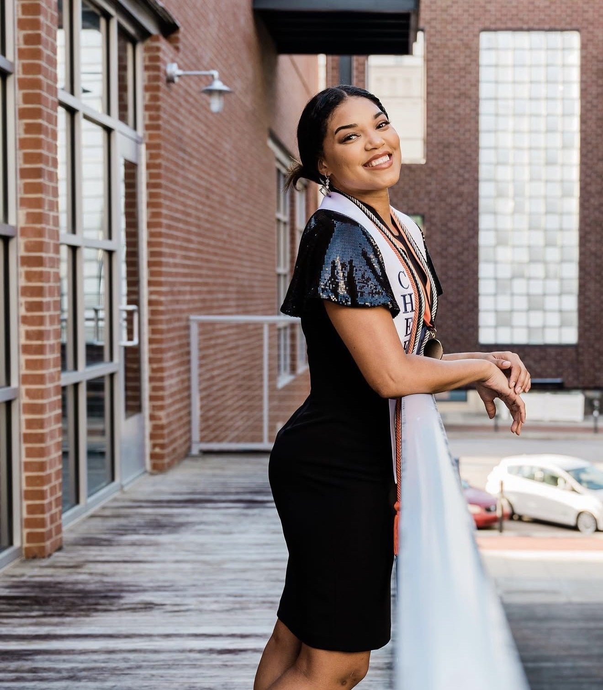

01 / Education
Learning as a foundation
Sierra earned a communications degree with a focus in public relations from Auburn University at Montgomery. Her favorite college course, Ethics and Law, helped shape her view of education as the foundation for lifelong learning.